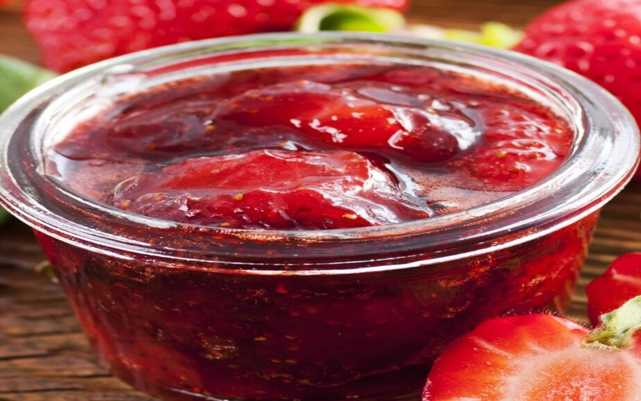

Geleia de morango

Ingredientes
- 450 gramas de morangos
- 1 xícara (chá) de açúcar
- Suco de 1/2 limão
Modo de preparo
-
Lave muito bem os morangos sob água corrente e retire as folhas.
-
Deixe-os de molho em água por 10 minutos e retire-os sem escorrer a
água, com cuidado para que as sujeirinhas fiquem no fundo da tigela.
-
Misture os morangos com o açúcar e o suco de limão em uma panela e
leve ao fogo baixo, mexendo sempre, por cerca de 30 minutos ou até que
se forme uma calda grossa e os morangos fiquem bem macios.
-
Deixe esfriar, distribua em vidros próprios para geleia esterilizados,
tampe bem e guarde na geladeira.